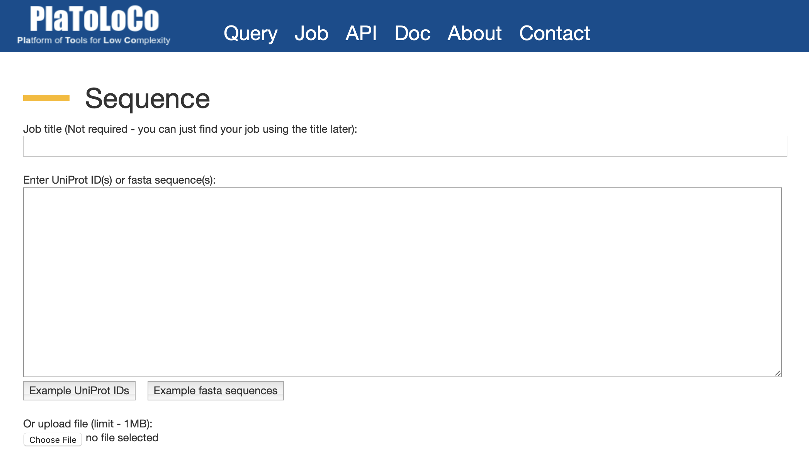

Users can select different Low Complexity Region detection methods based on their choice. In addition, various additional analyses are available: PFAM domain detection, transmembrane segment prediction and calculation of amino acid frequencies. For a brief introduction to these methods, see the Description of the server.
By default all method parameters are set as suggested by the authors of the original papers, however by clicking the black triangle next to selected method the user can expand its parameters and modify the values for that particular method. We also provide predefined parameter settings for SEG and fLPS: SEG-intermediate, SEG-strict and fLPS-strict. Please refer to the documentation section for more details.
After submission it takes a few seconds per protein to calculate the results, depending on the sequence length and server load. If you do not have time to wait for the results, please save your job ID. The results are stored on our webserver for a maximum of seven days and can be accessed later, using the Job menu.
This panel is for visualizing information about low complexity regions found using the selected methods on the submitted protein(s). You can select the following views:
Users can also filter their results using the search box by defining query IDs.
Clicking on the header of any prediction opens up a panel with detailed information for the selected protein.
A graphical representation of the LCR regions detected by the selected methods. The graph consists of four parts.
Amino acid frequency bar chart presents the comparison of sequence frequencies vs. database frequencies. Bars on top of the chart allow to switch on/off between databases: UniProt/SwissProt, nextProt, DistProt and PDB. Selection of a specific LCR in the upper Sequence detail chart results in a new Amino acid frequency chart that shows the frequencies for this specific region. The amino acid frequency results can be also downloaded in text format by clicking “Download CSV” button.
Users can personalize their results by selecting their preferred LCR detection methods and obtaining a consensus result, or using a strict definition calculated from the intersection of selected results, or using a more permissive definition calculated from the union of the results. By clicking “Download LCRs” button below the sequence, the user can download selected consensus results in fasta format.
Pfam & PDB details section provides detailed information about Pfam domains annotated to the analyzed sequence as well as PDB structures associated with that domain. By clicking “Show PDB” button next to a particular domain the user can obtain a list of links to PDB structures associated with that domain. Please note that this section is visible only if there exists any Pfam domains that are annotated to the sequence.
A summary of all predicted LCR regions displaying which amino acids are enriched in their sequences.